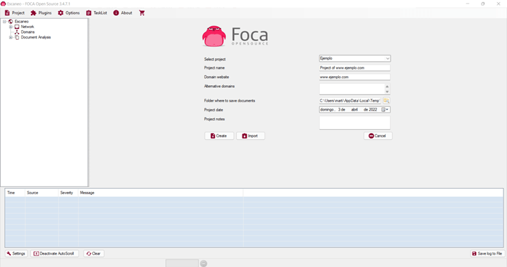
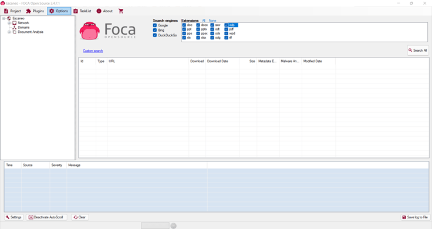
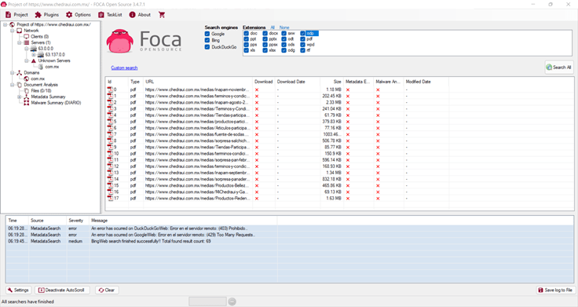
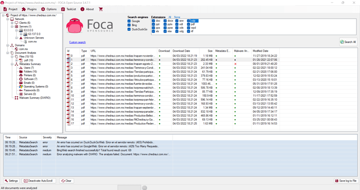
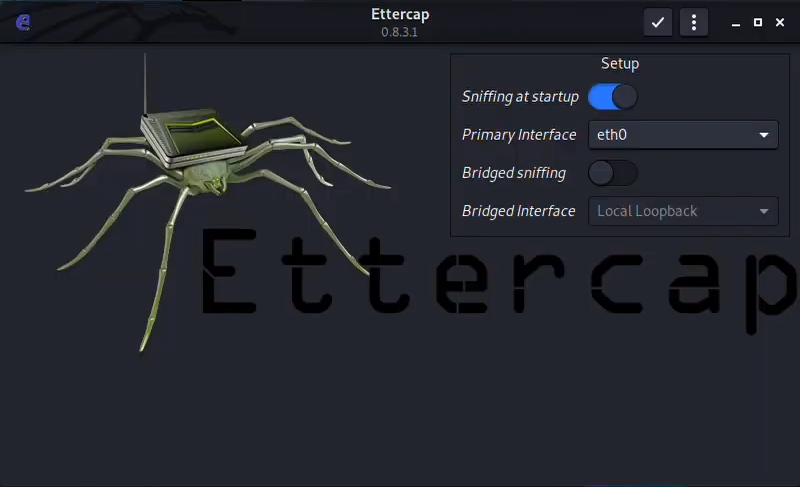

Seguridad en tu Página Web
En este proyecto conocerás eficaces herramientas de seguridad informática en sitios web
Descarga el archivo completo
Si buscas un poco más de información para revisar en profundidad el tema aquí tienes disponible el archivo. También es necesario aclarar que para utilizar las siguientes herramientas es necesario utilizar el SO kali-linux
HERRAMIENTAS
Nikto
Es un escáner de servidor web de código abierto, que realiza un escaneo de vulnerabilidades para buscar múltiples elementos como archivos y programas maliciosos, también comprueba si hay software obsoleto y busca errores en la configuración del servidor.
Archivos maliciosos
Nikto Es capaz de detectar más de 6700 archivos maliciosos.
Software obsoleto
analizando las versiones de los servidores, puede encontrar versiones desactualizadas e invluso encontrar fallos sobre versiones específicas.
Errores de configuración
Durante el análisis del servidor Nikto también obtiene las configuraciones del mismo, facilitando la tarea de detectar una mala configuración.
kali@kali: ~$
Nessus
Es una herramienta que hace un escaneo para encontrar puertos abiertos en un servidor y después intenta diferentes exploits para atacarlo, hace uso del escáner nmap y de uno propio de Nessus.
Plantillas Diseñadas
Nessus incluye plantillas preconfiguradas, que le ayudan a detectar en dónde hay vulnerabilidades, algunas incluyen un escaneado avanzado, auditoría de infrestructura de nube, detección de host, escaneado de malware.
Informes y solución de problemas personalizable
Las capacidades de elaboración de informes pueden optimizarse para satisfacer necesidades específicas y los informes se pueden exportar en los formatos más adecuados.
Multiplataforma
Nessus puede ser implementado en diversas plataformas, incluyendo Raspberry Pi. Esto lo hace totalmente portatil.
kali@kali: ~$
SQLmap
Es una herramienta la cual ayuda a testear/automatizar la detección y explotación de inyecciones SQL, recuperar las tablas que hay en una base de datos, entre otros.
Nmap
Es una herramienta que es empleada para el descubrimiento de redes con el fin de detectar los puertos que una aplicación web tiene abiertos, ya que muchos pueden ser obsoletos y pocos seguros porque carecen de la encriptación de los datos.
kali@kali: ~$
FOCA
Es una herramienta que sirve para la extracción de metadatos de cualquier tipo de documento (documentos de texto, imágenes, vídeos, entre otros.) que se encuentra en una aplicación web. Este se utiliza por medio de una interfaz gráfica.




kali@kali: ~$

Ettercap
Es una herramienta que es capaz de lanzar ataques Man-in-the-Middle, también se utiliza para el análisis de una red y auditorias de seguridad.
Compatibilidad con SSH1
Puede interceptar users y passwords incluso en conexiones "seguras" con SSH.
Compatibilidad con HTTPS
Intercepta conexiones mediante http SSL (supuestamente seguras) incluso si se establecen a través de un proxy.
Inyección de caracteres
En una conexión establecida emulando comandos o respuestas mientras la conexión está activa.
Sobre Jesús
Christopher
Información
22334785
correo@gmail.com